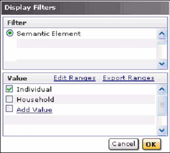
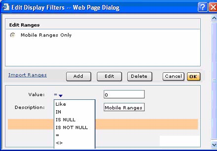
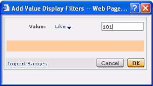

Building Score-based Segments
At this stage, you have created segments based on data sources, such as UDV, WHT, and Acquisitions Lists, we shall now learn how to create segments based on scores.
##Score Selectors
Display Filters
When you click Display filters on the properties area, Teradata RM opens the Display Filters pop up. Here, you can enter modifiers to filter the selection criteria. The next figure shows the Display Filter pop up.

To limit your choices using Display Filters:
-
Select the display filter legend by clicking the semantic element option.
-
Click the appropriate filter value by which you want to filter your results.
-
Click Add Value to enter the ranges or a specific value. This displays the Add Value Display Filter screen.
-
Click Edit Ranges to edit or specify specific values for filtering your results.
-
Click OK to commit your changes.
Edit Ranges
The Edit Display Filters pop up window allows you to add, edit, or delete ranges for scores that have previously been created. This window is displayed when you click Edit Ranges in the Display Filters pop up and is shown in the next figure.

To edit ranges in the Display Filter window:
-
Click Add to add a legend range. Enter a specific value and click Apply.
-
To delete a range, select the range and click Delete.
-
. To import a range, click Import Ranges.
Export Ranges
You can export ranges for future use in the Display Filters pop up window. To export ranges, select the file name and click Export ranges.
Add Value
The Add Value link in Display Filters pop up allows you to add new ranges to scores. Clicking this link displays the Add Display Filter pop up as shown in the next figure.

To add a new range to scores
-
Click Value list and select an option from the drop down list to add a value.
-
Enter the ranges or a specific value depending on the option selected in the previous step. In addition, you may optionally click Import Ranges to import ranges from a file. The data in the file will be imported to the display filters dialog box.
-
Click OK to add the new ranges to the scores list control.
Add Expression
The Add Expression Builder pop up is similar to the one you have come across in. However, the Table Columns list is not available when creating score-based segments. The next figure displays the Add Expression builder pop up. Figure 13. . figure not available as of now
To add an expression using expression builder
-
Select a function from the list of pre-defined functions and click Add or double-click to add the selected function to the expression.
-
Select an operator from the list of operators and click Add or double-click to add the selected operator to the expression. You may optionally modify the expression that you have created in the text area or click Clear Expression to clear the text area.
-
Click OK to save the expression.
Associated Criteria Segments
Defining Associated Criteria Segments
Associated criteria segments allow you to specify a criteria set, which has multiple records in the database. The criterion in this case is based on the associating semantic and not the output